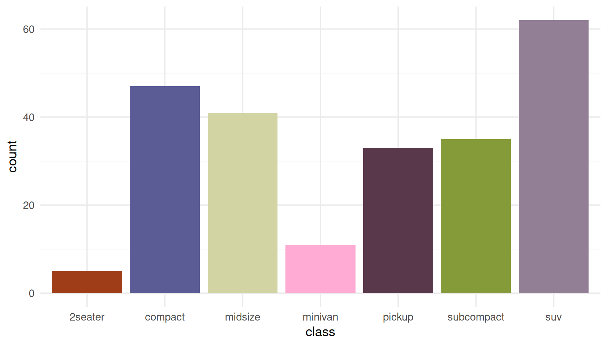
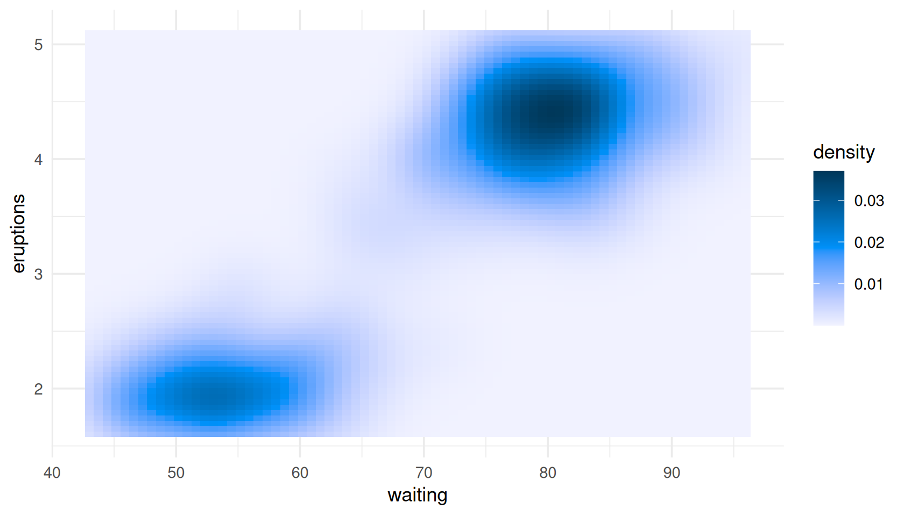
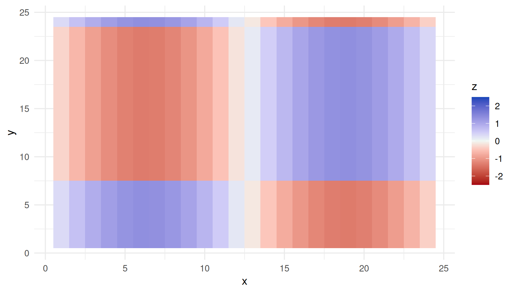
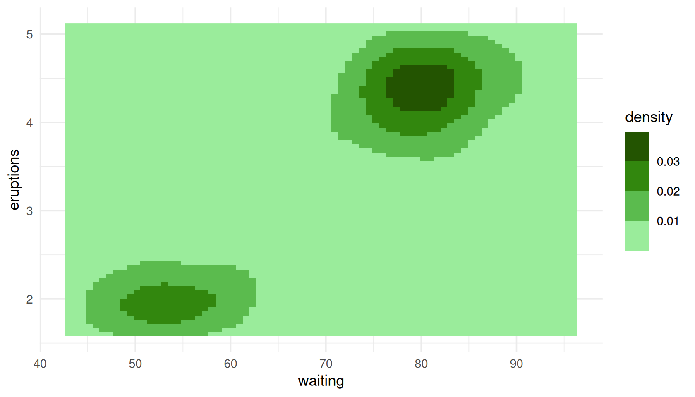
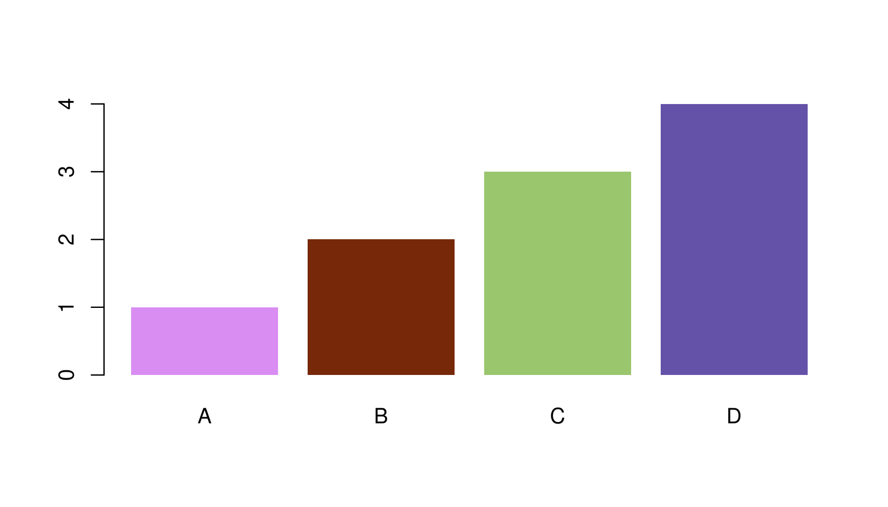
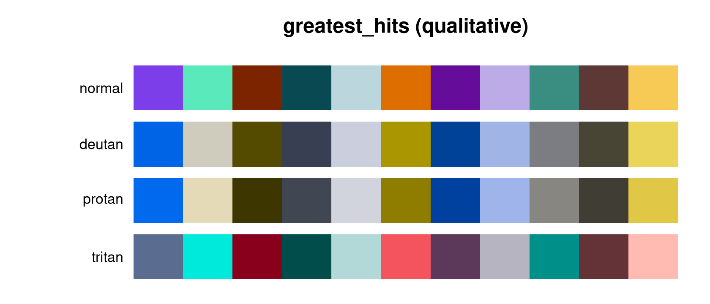
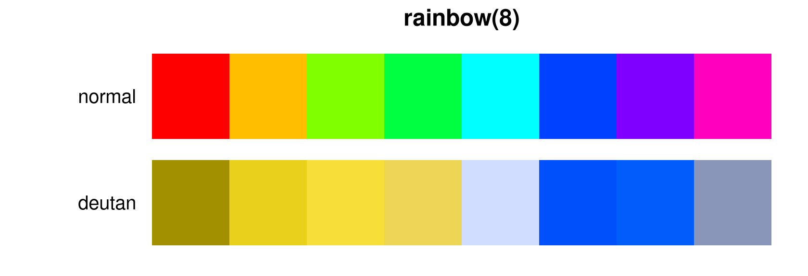

killerPals ships 48 palettes: a qualitative, a sequential and a
diverging palette for each of Queen’s fifteen studio albums, plus a
greatest_hits family drawn from the whole catalogue.
killer_names()
#> [1] "regina" "mirror_queen" "heart_attack" "opera_night"
#> [5] "race_day" "robot_news" "all_that_jazz" "game_on"
#> [9] "flash" "hot_space" "the_works" "kind_of_magic"
#> [13] "miracle" "innuendo" "heavenly" "greatest_hits"Picking a palette type
The single most common mistake in colour choice is using the wrong type of palette for the data. killerPals makes the three types explicit:
| Your variable | Palette type | Scale |
|---|---|---|
| Unordered categories (species, country, treatment) | qualitative |
scale_*_killer_d() |
| Ordered, low to high (count, density, temperature) | sequential |
scale_*_killer_c() |
| Spread either side of a meaningful zero (change, residual, anomaly) | diverging |
scale_*_killer_c(type = "diverging") |
Qualitative
ggplot(mpg, aes(class, fill = class)) +
geom_bar() +
scale_fill_killer_d("all_that_jazz") +
theme_minimal() +
theme(legend.position = "none")
Qualitative palettes deliberately refuse to invent extra colours. Asking for more than the palette defines is an error, not a silent interpolation, because interpolating between colourblind-safe colours produces colours that are not:
killer_pal("flash", n = 12)
#> Error:
#> ! Palette "flash" defines 8 qualitative colours; 12 requested.
#> Use `type = "sequential"` for an interpolated ramp, or pick a palette with more colours (see `killer_palette_info()`).If you genuinely have a dozen categories, use
greatest_hits — the largest qualitative palette — or
reconsider whether twelve colours will communicate anything at all.
length(killer_pal("greatest_hits"))
#> [1] 11Sequential
ggplot(faithfuld, aes(waiting, eruptions, fill = density)) +
geom_raster() +
scale_fill_killer_c("heavenly") +
theme_minimal()
Every sequential ramp is strictly monotone in lightness, which is what makes it readable in greyscale and for readers with any kind of colour vision:
killer_check("heavenly", n = 9, type = "sequential")$monotone_lightness
#> [1] TRUEDiverging
A diverging palette says “this value is above or below a reference
point”. That only works if the palette’s light midpoint actually sits at
that reference point, so set symmetric
limits:
set.seed(1975)
d <- expand.grid(x = 1:24, y = 1:24)
d$z <- as.vector(scale(outer(1:24, 1:24, function(a, b) sin(a / 4) * cos(b / 5))))
ggplot(d, aes(x, y, fill = z)) +
geom_raster() +
scale_fill_killer_c("kind_of_magic", type = "diverging",
limits = c(-2.5, 2.5)) +
theme_minimal()
Leave the limits off and killerPals will remind you, because the default range is whatever your data happens to span — which will silently put the midpoint somewhere meaningless:
p <- ggplot(d, aes(x, y, fill = z)) +
geom_raster() +
scale_fill_killer_c("kind_of_magic", type = "diverging")
#> killerPals: diverging scales assume the palette midpoint is the centre of the data range.
#> Set symmetric `limits`, or a `rescaler`, to pin the midpoint where you mean it.Binned
Binned scales cut a continuous variable into discrete steps, which often reads more clearly than a smooth gradient:
ggplot(faithfuld, aes(waiting, eruptions, fill = density)) +
geom_raster() +
scale_fill_killer_b("robot_news", n.breaks = 6) +
theme_minimal()
Using colours outside ggplot2
killer_pal() returns plain hex strings, so the palettes
work anywhere.
pal <- killer_pal("hot_space", n = 4)
pal
#> <killer_palette> hot_space (qualitative, 4 colours)
#> Hot Space (1982) - Four flat pop-art blocks - the most graphic cover they made.
#> #D98DF2 #772809 #9AC66D #6452A9
barplot(1:4, col = pal, border = NA, names.arg = LETTERS[1:4])
Sequential and diverging palettes interpolate through CIELAB to any length you ask for:
killer_pal("miracle", n = 3, type = "sequential")
#> <killer_palette> miracle (sequential, 3 colours)
#> The Miracle (1989) - Four faces morphed into one, in cold studio light.
#> #C5FEFF #009F9E #003D37
killer_pal("miracle", n = 11, type = "sequential")
#> <killer_palette> miracle (sequential, 11 colours)
#> The Miracle (1989) - Four faces morphed into one, in cold studio light.
#> #C5FEFF #5AF3FB #00E1E8 #00CACE #0CB4B5 #009F9E #008A87 #007671 #00625C #004F49 #003D37For code that needs a palette function — the shape ggplot2
and scales expect — use killer_pal_fun():
f <- killer_pal_fun("innuendo", type = "diverging")
f(5)
#> [1] "#005D33" "#54AF7C" "#EEF6F9" "#B98CD3" "#722CA1"Auditing accessibility
The package’s central claim is that these palettes stay legible for
colourblind readers. killer_check() lets you verify that
rather than trust it.
killer_check("greatest_hits")
#> <killer_check> greatest_hits (qualitative)
#> colours: 11
#> worst-case CIEDE2000 separation by vision type:
#> normal 14.6
#> deutan 13.3
#> protan 12.7
#> tritan 12.5
#> contrast vs white: 1.52 - 10.08
#> contrast vs black: 2.08 - 13.80
#> lightness (L*): 27.9 - 83.9
#> monotone lightness: FALSEmin_distance is the smallest CIEDE2000 difference
between any two colours in the palette, recomputed after
simulating each kind of colour vision deficiency. As a rule of thumb, a
difference of 1 is the smallest a person can detect at all, and 10 is
comfortably distinguishable at a glance.
To see it rather than read it:
killer_cvd_grid("greatest_hits")
Compare that with a palette built without any of this in mind:
rb <- grDevices::rainbow(8)
op <- par(mar = c(0.5, 5.5, 1.5, 0.5))
plot(c(0, 8), c(0, 2), type = "n", axes = FALSE, xlab = "", ylab = "",
main = "rainbow(8)")
rect(0:7, 1.1, 1:8, 1.9, col = rb, border = NA)
rect(0:7, 0.1, 1:8, 0.9, col = killer_cvd(rb, "deutan"), border = NA)
text(c(-0.2, -0.2), c(1.5, 0.5), c("normal", "deutan"), adj = 1, xpd = NA)
par(op)
min(killer_check(colours = rb)$min_distance)
#> [1] 0.9610308Two of those eight colours are essentially identical to a deuteranopic reader. Every killerPals qualitative palette keeps its worst pair above 10, and the per-album palettes above 15:
worst <- vapply(killer_names(), function(nm) {
min(killer_check(nm)$min_distance)
}, numeric(1))
round(sort(worst), 1)
#> greatest_hits the_works hot_space all_that_jazz flash
#> 12.5 16.0 16.2 16.8 17.3
#> mirror_queen miracle game_on kind_of_magic regina
#> 17.4 17.6 17.8 17.8 18.0
#> robot_news heavenly heart_attack opera_night race_day
#> 18.1 18.4 18.4 19.1 20.3
#> innuendo
#> 21.1The individual metrics
The building blocks are exported too, and work on any colours:
# Perceptual difference
killer_distance("#FF0000", "#FF3300")
#> [1] 3.585222
# WCAG contrast ratio, and relative luminance
killer_contrast("#FF524F", "white")
#> [1] 3.195462
killer_luminance(c("white", "grey50", "black"))
#> [1] 1.0000000 0.2122308 0.0000000
# Which pair in a palette is the weakest link?
m <- killer_distance_matrix(killer_pal("flash"), cvd = "deutan")
round(min(m, na.rm = TRUE), 1)
#> [1] 17.3Choosing between palettes
killer_palette_info() gives a tidy overview, including
each palette’s blurb:
info <- killer_palette_info(type = "qualitative")
info[order(-info$n), c("name", "album", "year", "n")][1:5, ]
#> name album year n
#> 16 greatest_hits Greatest Hits 1981 11
#> 1 regina Queen 1973 8
#> 3 heart_attack Sheer Heart Attack 1974 8
#> 2 mirror_queen Queen II 1974 8
#> 4 opera_night A Night at the Opera 1975 8
cat(paste0(format(info$name, width = 15), info$blurb), sep = "\n")
#> regina Smoke, spotlight and stage-purple from the 1973 debut.
#> heart_attack Oiled, exhausted and lit in sickly green - the 1974 pile-up.
#> mirror_queen The mirrored Mick Rock portrait: side White against side Black.
#> opera_night Heraldic crest colours: cream, gilt and deep operatic red.
#> race_day The crest again, inverted - black lacquer and silver.
#> robot_news Frank Kelly Freas's robot: pulp-magazine blues and steel.
#> all_that_jazz Berlin Wall stencil geometry in flat, graphic primaries.
#> flash Ah-ah! Saviour of the universe: comic-strip red, gold and void.
#> game_on Chrome, leather and cool monochrome with a flash of colour.
#> greatest_hits The most separable colours from all fifteen studio covers.
#> hot_space Four flat pop-art blocks - the most graphic cover they made.
#> the_works George Hurrell's Hollywood monochrome, warmed by sepia light.
#> kind_of_magic Roger Chiasson's cartoon night sky: neon over midnight blue.
#> miracle Four faces morphed into one, in cold studio light.
#> innuendo Grandville's Victorian engraving, hand-tinted and ornate.
#> heavenly Montreux at dusk: lake blue, alpine grey and the last light.